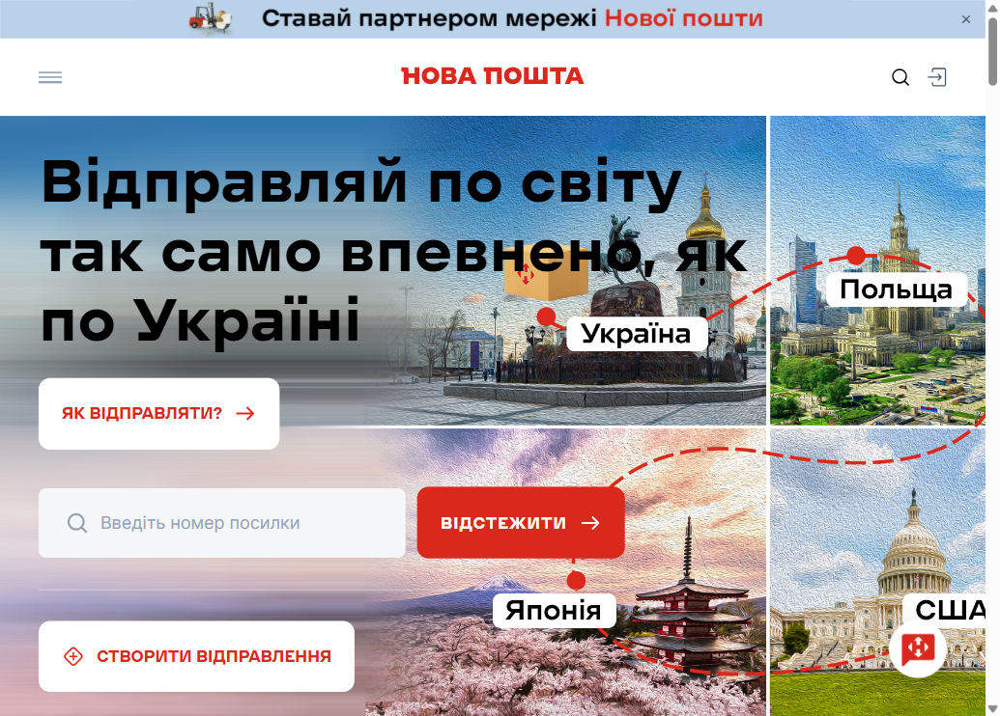
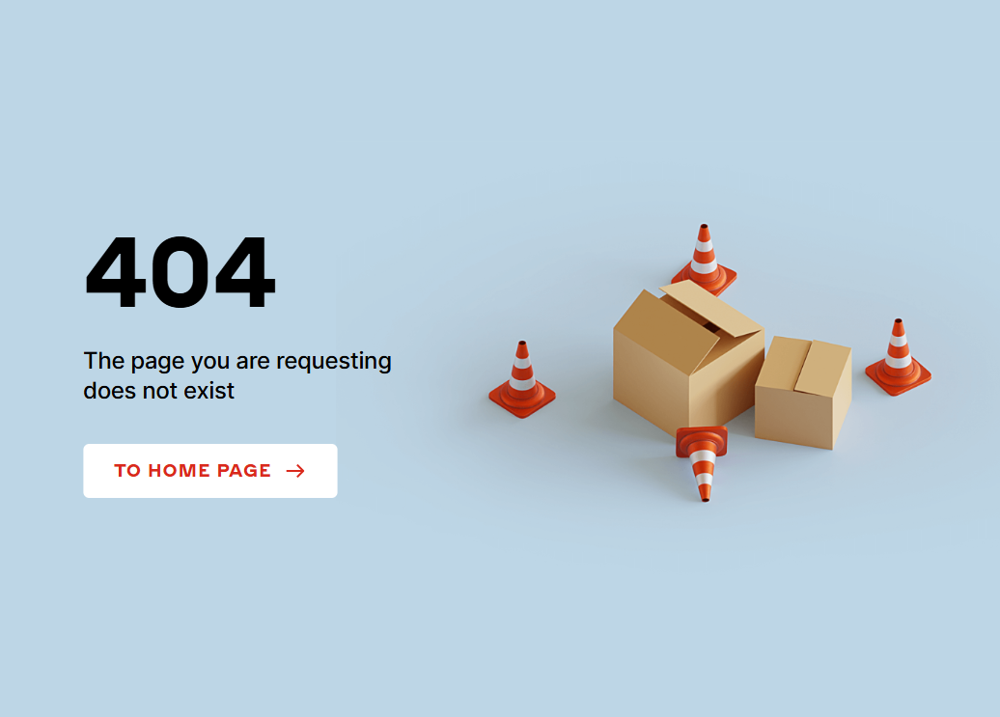
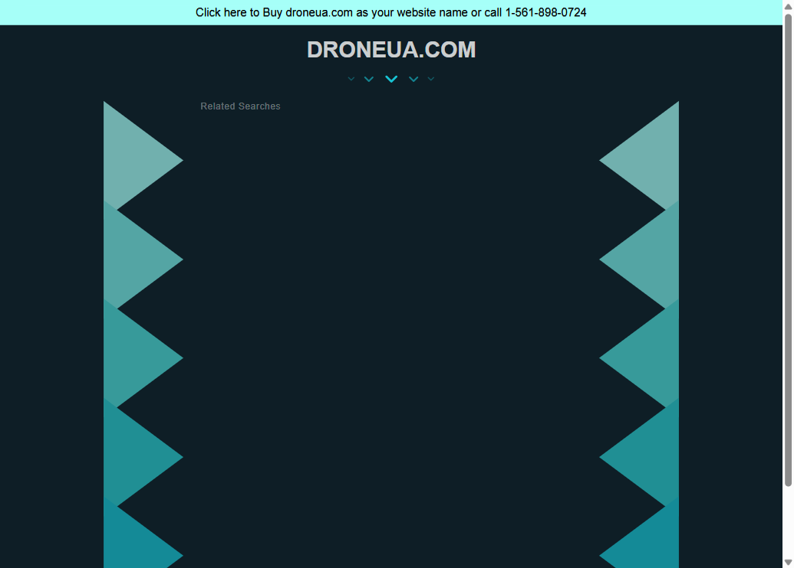
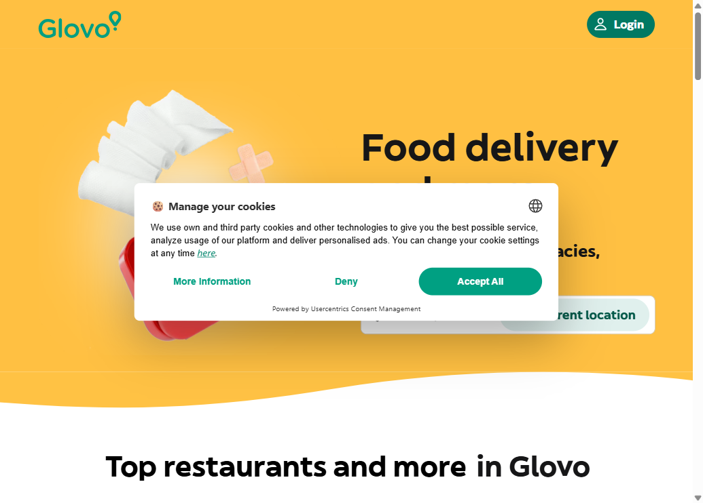
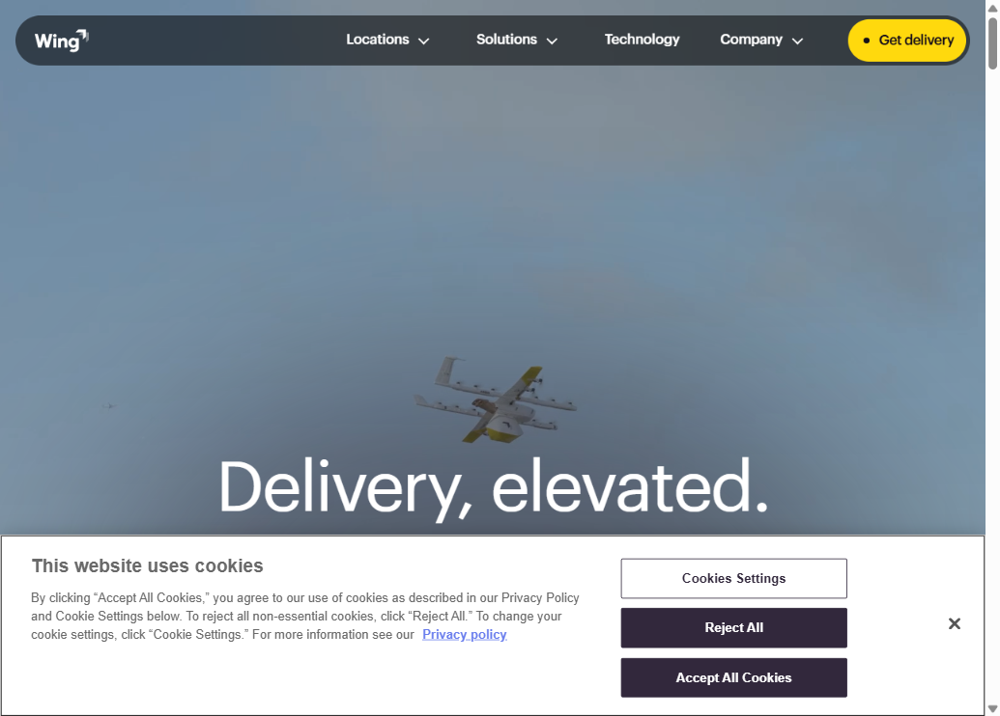
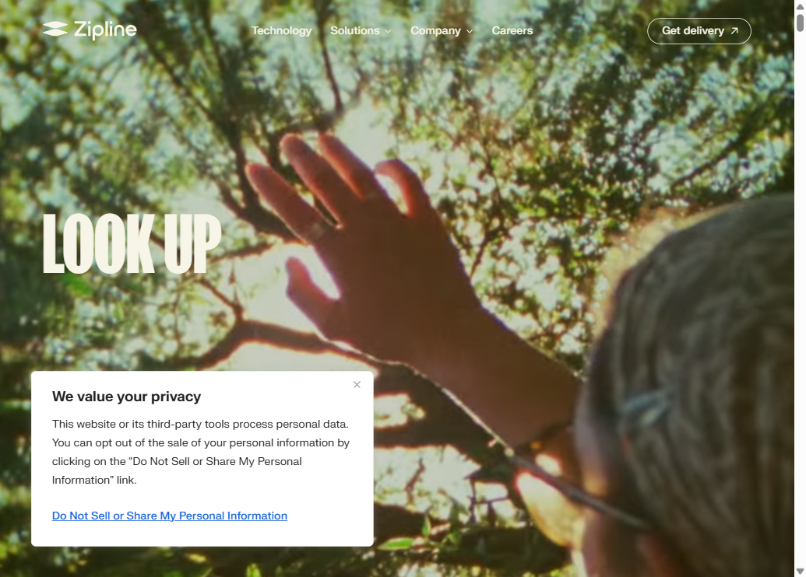
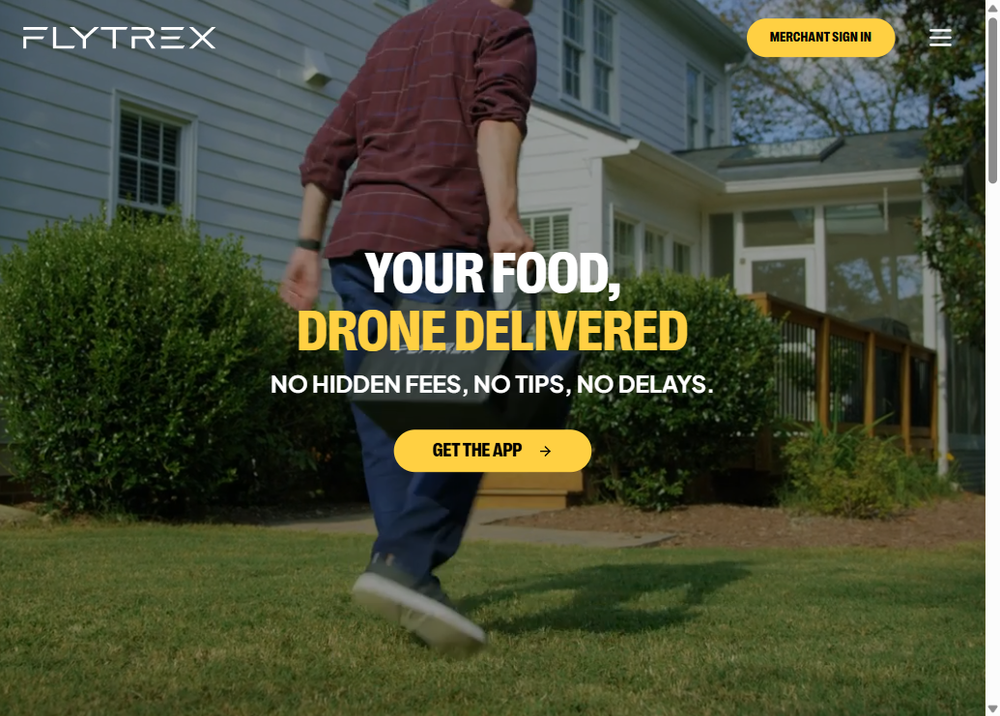
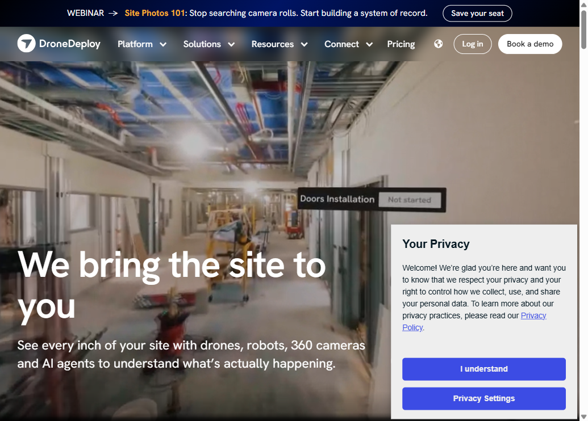

DRON Research
Competitive analysis, trust benchmarks, and UX pattern evaluation for a drone-as-a-service platform. Company-owned operators · Ukraine + Europe · Mobile-first · Trust as primary value.
Competitors
8 products across Hard (UA market), Soft (same JTBD), and Aspirational (drone category) groups. Matrix across 5 axes.
Competitor Matrix — 8 × 5
| Product | Audience | Product foundation | Key mechanism | Trust | Monetization |
|---|---|---|---|---|---|
| Nova Poshta Hard · UA |
All UA, B2C + B2B, parcel senders | 30-yr physical branch network + digital layer | Dense coverage + real-time parcel tracking | 30-yr brand + physical presence + govt recognition | Per-delivery fee (weight/size) + COD |
| DroneUA Hard · UA |
B2B — farmers, industrial, developers | Own drone fleet + training + software | Technical expertise + certifications | Certs + military track record | Project contracts + equipment sales + training |
| Glovo Soft · UA |
Urban 18–35, smartphone-native | Gig courier network + merchant partnerships | Massive catalog + speed + live tracking | Ratings + no-questions refund + courier photo | Delivery fee + merchant commission + Prime sub |
| Nova Poshta app Soft · UA |
UA mobile senders/receivers, active users | Digital interface over NP physical network | All shipments in one place + proactive push + QR | Brand trust + biometric auth + card security | Loyalty driver for NP core revenue |
| Wing Aspirational |
Suburban households, AU / US / FI | Alphabet-backed autonomous drone fleet + partner API | 3-step flow + second-precise tracking | Google heritage + 1M+ deliveries + Walmart [wing.com] | Per-delivery + B2B API licensing |
| Zipline Aspirational |
Consumers + B2B medical | Own VTOL Platform 2 drones | "Look up" — watch drone arrive; 86-sec record | "60K lives saved" + "reliable, every time" [zipline.com] | Per-delivery + B2B medical contracts |
| Flytrex Aspirational |
Suburban US consumers, food delivery | Autonomous drones + DoorDash/Uber integration | Backyard delivery via existing app checkout | FAA-certified + 200K+ deliveries [search] | Delivery fee + DoorDash/Uber partnership fees |
| DroneDeploy Aspirational |
Enterprise B2B — construction, mining, utilities | SaaS + AI analysis, multi-modality capture | "One login for all data" — unifies drone + robotics | "3M sites, 180 countries" + Turner/BP [dronedeploy.com] | SaaS subscription + Data on Demand + robotics |
[?] Behind login, not captured: DroneUA operator dashboard · DroneDeploy project view · Flytrex order flow · any pricing pages.
Screenshots — captured June 2026








3 Common Market Patterns
- P-1 Live tracking is the baseline, not a feature. Every delivery product in the set shows real-time status. Users trained by Bolt and Glovo expect to see order location at every moment. No tracking = no trust. Source: screenshots + wing.com/technology + Devlight NP case.
- P-2 Maximum 3-step ordering flow across all mature products. Wing: shop → pick location → receive. Glovo: order → track → get. Zipline: pick → watch → get. Any product exceeding 3 primary steps loses mobile conversion. Source: wing.com, zipline.com WebFetch.
- P-3 Numbers, not adjectives, build credibility. Wing (1M+ deliveries, 12 years), Zipline (60K lives saved, 70M miles), DroneDeploy (3M sites, 180 countries), Flytrex (200K deliveries, FAA-certified). "Trusted" and "reliable" appear nowhere in hero copy. Source: WebFetch from each homepage.
3 Key Differences
- D-1 Trust anchor is origin-dependent — no universal model. UA players (Nova Poshta) use physical presence. Global tech (Wing, Zipline) use technology lineage. Drone platforms (Flytrex) use regulatory cert. DRON must build cold-start trust from zero — operator verification + insurance is the only available mechanism.
- D-2 B2B vs B2C is a hard architectural split. DroneUA and DroneDeploy are purely B2B. Glovo and NP app are purely B2C. DRON's two-user-type model (client + operator SRM) has no direct reference in this set.
- D-3 Every peer hides the operator. DRON won't — this is the differentiator. In Glovo, NP, Wing, and Flytrex the operator is invisible. DRON shows a named, photo-verified human operator. Closest reference: Bolt (driver card pre-arrival). Unfamiliar in the drone category — both a risk and a structural advantage.
Benchmark
5 best-in-class products where "trust in a professional stranger" is the core mechanism. Evaluated across 7 criteria (35 pts max).
Evaluation — 5 Products × 7 Criteria
| Criterion | Airbnb | TaskRabbit | Rover | Bolt / Uber | Zocdoc |
|---|---|---|---|---|---|
| 1 · Identity verification | ★★★★★ Photo ID + selfie + address; 100% hosts verified since 2023 |
★★★★★ Background check + ID; "Tasker verified" badge |
★★★★★ Background check + Star Sitter; not all sitters |
★★★★★ Continuous checks + real-time facial match per shift |
★★★★★ Medical license + NPI + board cert before listing |
| 2 · Booking simplicity | ★★★★★ 5–7 steps: search → dates → guests → checkout |
★★★★★ 4 steps: service → tasker → time → pay |
★★★★★ Message → await reply → meet & greet → book |
★★★★★ 1 screen → 1 tap → confirmed. Fastest in class |
★★★★★ Specialty → insurance → slot → confirm in 30s |
| 3 · Trust signal timing | ★★★★★ Superhost + Verified + reviews on listing card pre-booking |
★★★★★ Rating + Elite + bg-check badge on tasker card |
★★★★★ Reviews visible; response rate not always shown |
★★★★★ Driver photo + name + rating + car at booking confirm |
★★★★★ License + certs + insurance on profile before booking |
| 4 · Real-time transparency | ★★★★★ Check-in instructions only; no live tracking |
★★★★★ Chat + status updates; no live location |
★★★★★ GPS walk map + photo updates + live video option |
★★★★★ Live map + ETA to second + share trip link |
★★★★★ Reminder only; N/A for category |
| 5 · First-use anxiety | ★★★★★ AirCover up to $3M + 24/7 support + cancellation policy |
★★★★★ "Happiness Pledge" exists but not prominent |
★★★★★ Rover Guarantee; but "message first" = limbo anxiety |
★★★★★ Driver info + safety features in-app |
★★★★★ Insurance confirmation + free cancel up to 1h before |
| 6 · Drop-off recovery | ★★★★★ Wishlists + email sequences + "Dates you saved" |
★★★★★ Email reminders; weak in-app abandoned flow |
★★★★★ Sitters ignore messages; owners feel ghosted [Kinship] |
★★★★★ "Complete your ride" push; surge pricing re-nudge |
★★★★★ Reminder system; weak abandoned-booking recovery |
| 7 · Provider profile depth | ★★★★★ Bio + calendar + response rate + verified photos + reviews |
★★★★★ Skills + hourly rate + job count + Elite badge |
★★★★★ Photos + specialties + repeat-client % + Star Sitter |
★★★★★ Name + photo + rating + car — intentionally minimal |
★★★★★ License + board certs + education + insurance networks |
| Total / 35 | 29 | 27 | 24 | 31 | 29 |
Top 3 Mechanisms for DRON MVP
Apply in DRON: "Order confirmed" screen = operator card + live map + ETA. Never a generic "order received."
Apply in DRON: Operator card must show without tapping — photo · rating · Verified badge · Insured badge · jobs count.
Apply in DRON: Profile opens with — "Certified operator · CAA/EASA license · Insured 500 000 UAH · 47 jobs." Bio comes after.
Rover requires messaging a sitter, waiting for a reply (frequently ignored), arranging a pre-booking meeting, then booking. Appropriate for multi-day pet care. Fatal for DRON.
DRON's audience arrives with a Bolt/Glovo mental model: sub-60-second booking. Any async negotiation before confirmation makes the perceived value equal to Kabanchik.ua. Rover itself documented this failure: "sitters frequently ignore messages without consequence, leaving owners feeling ghosted." — Kinship.com
UX Patterns
5 fundamentally different interaction patterns for speed-first on-demand services. Evaluated against DRON's context from CLAUDE.md.
Client specifies service type + location → system assigns nearest certified operator → booking confirmed. No selection step, only confirmation.
2. Speed is the core product value
3. Audience has no criteria to evaluate drone pilots — auto-dispatch removes the question
Client sees list/grid of available operators with profiles → browses → selects → confirms. Decision is entirely the client's.
Client posts job → system broadcasts to multiple operators → first to confirm gets it. DRON has employed operators — broadcast has no architectural basis. Core failure: recreates the Kabanchik.ua anxiety this product replaces.
Client selects date + time → system shows available operators for that slot → confirm. Time is the primary axis.
System narrows options via sequential questions. Useful for first-time onboarding only. Breaks for repeat users who can't skip steps. Mobile context + multiple screens = drop-off by screen 3.
Chosen Architecture: Two-mode flow
Auto-Dispatch + Calendar-First depending on service type
Service → Location → Confirm → Operator assigned → Pay → Track
2 taps to confirmed booking. System decides. No selection step.
Service → Details → Pick slot → Confirm → Operator assigned → Pay
Calendar-first. Client controls timing. Operator auto-assigned to slot.
Conclusions
Research gaps and testable hypotheses derived from competitor analysis, benchmarks, CJM, and pattern evaluation.
Research Gaps
| # | Gap | Why it matters | Status |
|---|---|---|---|
| G-1 | How Ukrainians currently discover and evaluate drone operators on OLX / Kabanchik | This IS the current-state flow DRON replaces; designing blind without it | Not researched |
| G-2 | Consumer-service operator SRM dashboard — what it looks like | DroneDeploy is enterprise B2B; no UI reference for managing individual consumer jobs | No reference found |
| G-3 | Wing and Zipline first-use onboarding — do they have an anxiety-reduction flow? | Critical for DRON's first-order experience design | Behind app login |
| G-4 | Drone service pricing benchmarks in Ukraine | Without price anchors, pricing screen design is speculative | No public data |
| G-5 | Diia and BankID mobile registration conversion rates | Activation depends on this; if low, fallback registration needed | No public data |
Hypotheses — if / then / because [source]
User Personas
Derived from CLAUDE.md brief and competitive research. Two fundamentally different mental models and goals.
- Get drone service done fast — without learning anything about drones
- Know the operator is real, certified, and insured before confirming
- See price upfront — no surprises at checkout
- Track the job live and receive a proof of completion
- OLX/Kabanchik: must message, wait, negotiate — no certainty
- Can't verify if operators are licensed or insured
- Price unclear until after conversation
- No recourse if something goes wrong
- Consistent, predictable job flow without self-marketing
- Accept jobs in <10 seconds with all info upfront
- Automatic payment after job — no invoicing or cash
- Build verified reputation through transparent ratings
- Kabanchik/Instagram: inconsistent demand, feast-or-famine
- Manual payment collection — chasing clients
- No legal/insurance backing when disputes arise
- Reputation doesn't transfer across platforms
Customer Journey Maps
4 stages: Attraction → Activation → Involvement → Retention. Drop-off risk rated 🔴 high / 🟡 medium / 🟢 low. Friction mapped to Whalen's 6 Minds.
Whalen's 6 Minds — reference
Source: John Whalen, Design for How People Think (O'Reilly, 2019) · uxr.cl review
Client Journey — Катерина
| Touchpoint | Action | Emotion | Whalen friction | Drop-off |
|---|---|---|---|---|
| 01 ATTRACTION — discovers DRON and understands what it is | ||||
| Social media / TikTok | Sees video: drone delivers package to balcony | Curiosity + slight disbelief | Language — "Is this available where I live?" | 🔴 Bounces in 8s if homepage unclear |
| Word of mouth | Friend: "I used a drone service, it was wild" | Trust via social proof | Emotion — "But would I trust it?" | 🟡 Interest, no immediate action |
| App Store search | Searches "drone delivery Kyiv" | Intent | Vision — screenshot quality decides install | 🟡 Installs if screens show real service |
| Google search | Searches "замовити дрон" | High intent | Language — ad copy must match landing page | 🔴 Mismatch = instant back |
| ↳ Critical: first 8 seconds. If Vision + Language don't answer "what / how fast / how much?" — user is gone. | ||||
| 02 ACTIVATION — completes registration and places first order | ||||
| App open → onboarding | Sees 1–3 onboarding screens | Anticipation | Memory — 3+ slides = skipped | 🟡 |
| Registration | Taps "Sign in with Diia" | Mild anxiety about data | Emotion — "Am I giving too much info?" | 🔴 Manual form → 60–70% drop |
| Browse services | Sees Delivery / Photo / Inspection | Curiosity | Decision — "which one is for me?" | 🟢 If tiles show clear use-case illustrations |
| Operator selection | Views 2–3 available operators | Peak anxiety | Emotion — "Who is this person? Do I trust them?" | 🔴 #1 drop-off if trust signals missing |
| Pricing screen | Sees total cost | Decision tension | Decision Emotion — hidden fees = rage quit | 🔴 Any surprise = abandonment |
| Payment | Apple Pay one tap | Relief | Memory — card entry is a barrier | 🟢 If Apple/Google Pay is primary CTA |
| Post-booking | Sees tracking screen + operator photo + ETA | Anxiety → anticipation | Emotion — first trust moment | 🟢 |
| ↳ Critical: operator selection screen. Every missing trust signal is a reason to close the app. | ||||
| 03 INVOLVEMENT — forms habit of using DRON | ||||
| Order history | Tries to find previous order | Mild frustration | Wayfinding — where is my history? | 🟡 If buried 3+ taps deep |
| Repeat booking | Wants to re-book same operator | Expects speed | Memory — don't make me re-enter everything | 🔴 No "Book again" → goes to Kabanchik |
| Issue / complaint | Job result unsatisfying | Anger + distrust | Emotion — one bad experience taints platform | 🔴 No resolution path = permanent churn |
| Rating prompt | Asked to rate after job | Mild friction | Decision — takes effort | 🟡 One-tap star = higher completion |
| 04 RETENTION — becomes loyal, refers others | ||||
| Push notification | "Your favorite operator is available" | Positive nudge | Emotion — platform remembers me | 🟢 |
| Direct contact | Tries to reach operator outside app | Rational cost-saving | Emotion vs. rational | 🔴 Direct channel = platform bypass |
| Referral | Tells friend about service | Pride + advocate | Language — needs simple share mechanism | 🟢 One-tap share link |
Operator Journey — Андрій
| Touchpoint | Emotion | Whalen friction | Drop-off |
|---|---|---|---|
| 01 ATTRACTION — discovers DRON as a job source | |||
| Drone community (Telegram / Facebook) | Curiosity + skepticism | Language — "another platform taking 30%?" | 🔴 Fee must be visible immediately |
| LinkedIn / job boards | Professional interest | Decision — compare with direct freelancing | 🟡 |
| 02 ACTIVATION — completes verification and goes live | |||
| Document upload (license, insurance) | Effort + uncertainty | Memory Emotion — "How long will review take?" | 🔴 No ETA for verification → goes silent |
| Profile setup | Motivated but unsure | Language — "what should I write about myself?" | 🟡 Templates reduce abandonment |
| First job offer received | Excitement + anxiety | Decision — "accept? enough info?" | 🟢 If job card has full details |
| ↳ Critical: if verification takes >48h with no status update, operator loses interest and exits. | |||
| 03 INVOLVEMENT — manages jobs through SRM | |||
| Job checklist in field | Focused | Wayfinding — app usable with gloves, in sunlight | 🟡 Large touch targets, high contrast required |
| Photo upload on site | Task completion | Memory — upload must be instant | 🔴 Slow upload → operator skips → client unhappy |
| Payment received | Satisfaction | Emotion — delay >24h erodes platform trust | 🔴 |
| 04 RETENTION — keeps DRON as primary income source | |||
| Direct client contact attempts | Rational bypass | Emotion — "I built this relationship, why share revenue?" | 🔴 Platform must provide value beyond matching |
| Rating visibility | Pride or frustration | Emotion — transparent, fair rating = loyalty | 🟢 |